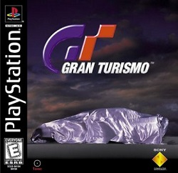
Atenção, porque aqui não tem lugar para medrosos! Com uma lista de mais de 160 carros e ótima jogabilidade, Gran Turismo é de longe o melhor game de corrida para PlayStation. A principal diferença com os outros jogos é que aqui você tem de provar que realmente sabe dirigir e deve conquistar carteiras de habilitação em diversos níveis para conseguir ter acesso a novas pistas e veiculos. Outro detalhe interessante são os carros, modelos originais e de série de montadoras como Mitsubishi, Toyota, Chevrolet, entre outras. Para ajudar você nestas velozes e emocionantes corridas.
| 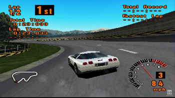 | 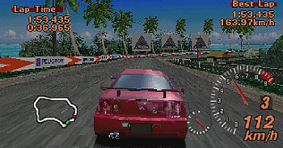 |
| 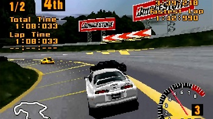 | 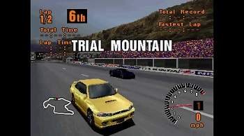 |
1 - Aprenda o traçado das pistas
2 - Controle sua adrenalina, nem sempre é preciso acelerar ao máximo
3 - Mas também não seja um maricas, pé em baixo sempre que conseguir.
4 - Prescisa treinar e saber cantar os pneus nas curvas
5 - Não fique dançando muito, mantenha o carro reto o máximo que puder
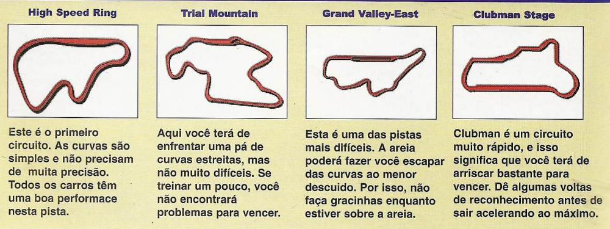
Fazendo as Curvas - A melhor forma de fazer uma curva é diminuir a aceleração e começar pela parte externa, e mantendo a linha mais reta possível. Somente quando estiver no meio da curva comece a acelerar novamente. Lembre-se também que as derrapadas nas curvas podem ser muito eficientes, desde que feitas com prescisão.
Seja Chato - Use os outros carros em sua vantagem. Quando estiver fazendo uma curva por dentro e tiver um carro por fora, use seu adversário como apoio para evitar que derrape. Quando um carro estiver ameaçando ultrapassar mude para câmera externa e mantenha seu carro na frente do adversário para ganhar um impulso.
Ganhe muito Dinheiro - Teoricamente, disputa corridas para ganhar mais dinheiro e assim conseguir comprar carros e acessórios. Consiga o máximo de habilidades que puder. No começo, pode até encontrar uma certa dificuldade para vencer as provas, mas irá ganhar alguns trocados. Use o dinheiro que conseguir para comprar acessórios e aumentar suas chances de vencer. Quando puder, compre um carro melhor
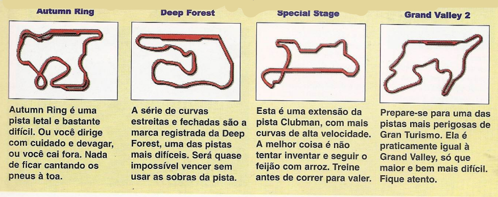
Uma informação importante: Se chegar em primeiro quando estiver participando da seleção, ganhará $500.
Lembre-se também que as primeiras posições rendem sempre mais dinheiro.
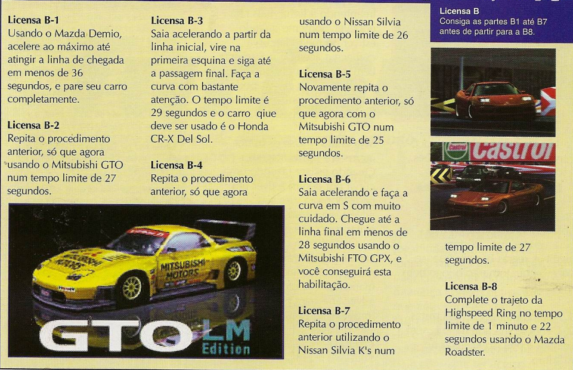
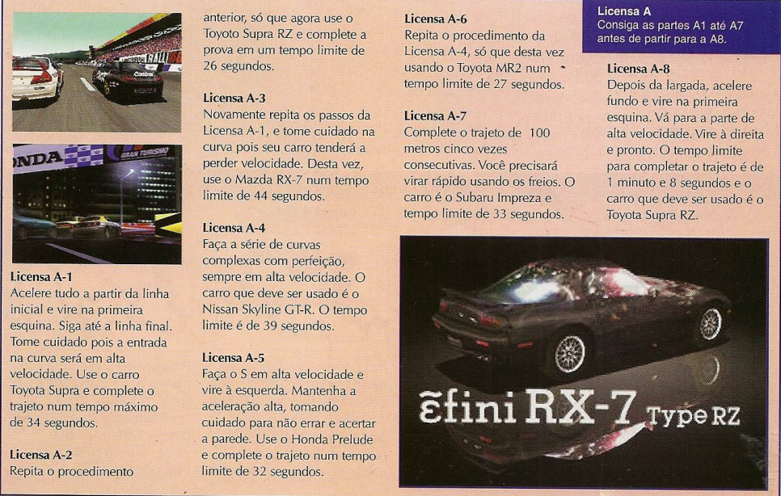
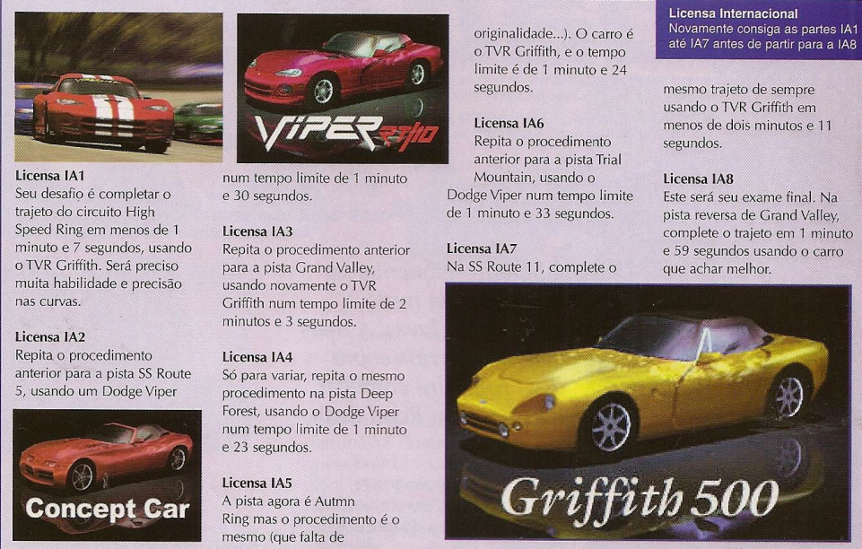
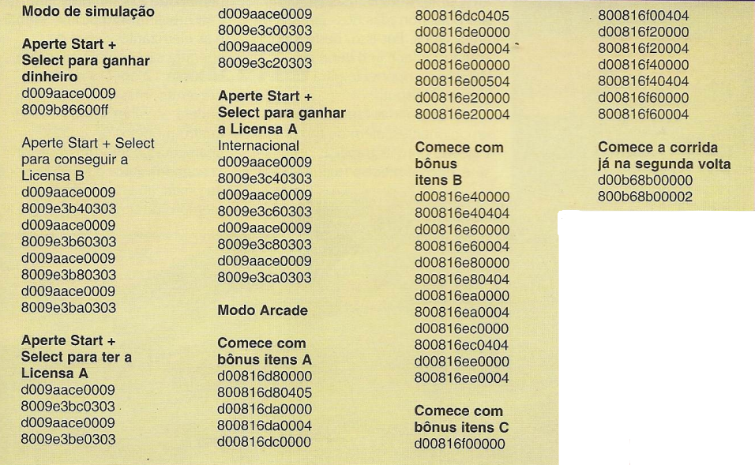